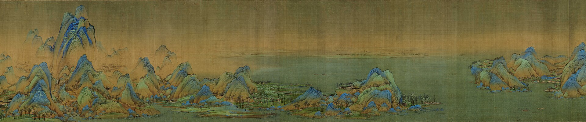
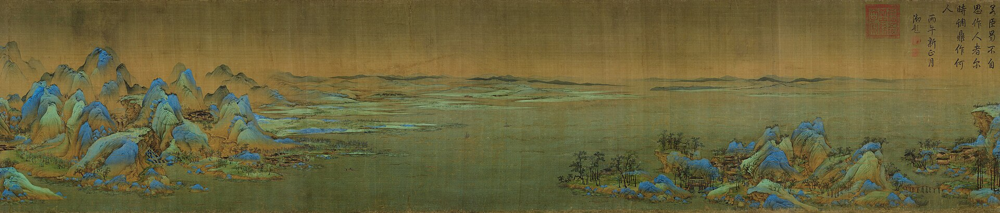
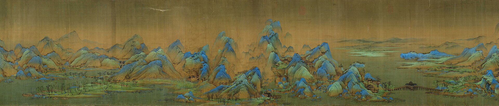

绢本设色 · 纵51.5厘米、横1191.5厘米 · 北宋政和三年（公元1113年）· 中国十大传世名画之首

【画理鉴赏】：画面上层石青深邃，中层石绿鲜朗，山脚与水际烘染赭石淡墨。山石以短披麻皴和点子皴皴擦出肌理，山峦峰顶覆以厚重的矿物厚色，历经九百余年仍光华璀璨、夺人心魄。这正是我们系统“研发交付态势图”与主色调的直接出处！

【画理鉴赏】：江河辽阔无垠，两岸冈阜起伏。古绢本微黄温润的底色与微风吹拂的水汽在此处融为一体，正是我们 UI 界面“计白当黑”留白呼吸空间的范本。

【画理鉴赏】：在浩大山水之中，王希孟以精细至极的界画笔法，描摹了横跨江面的木构长桥、亭台楼阁与撑篙渔人。这种“宏观有千里之势，微观有毫厘之精”的架构，正是我们团队多角色协作与日志札记流转的哲学隐喻。